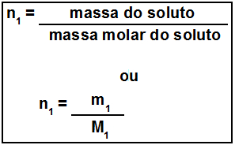

Concentração em mol/L ou molaridade
A molaridade, ou concentração em quantidade de matéria (mol/L), é a relação entre a quantidade de matéria do soluto (n1) e o volume da solução em litros (V).
A concentração em quantidade de matéria é a relação entre a quantidade de matéria do soluto, medida em mol (n1), e o volume da solução em litros (V). Essa concentração é medida em mol por litro (mol/L).
Consideremos o suco gástrico que nosso estômago produz com a finalidade de realizar o processo de digestão. Na realidade, trata-se de uma solução de ácido clorídrico (HCl) em uma concentração de 0,01 mol/L. Isso significa que, para cada litro de suco gástrico, há 0,01 mol de HCl.
A concentração em quantidade de matéria é muitas vezes chamada por alguns autores de concentração molar ou molaridade, mas os termos corretos são “concentração em mol/L” ou“concentração em quantidade de matéria”. Além disso, essa concentração é a mais recomendada pelo Sistema Internacional de Unidades (SI) e pela União Internacional da Química Pura e Aplicada (IUPAC); portanto, ela é a mais usada em laboratórios e indústrias químicas.
Mapa Mental: Unidade de Concentração em Mol/L
Fórmulas utilizadas na molaridade
A fórmula matemática usada para calcular essa concentração é dada por:

Em muitos casos, não é fornecido o valor da quantidade de matéria do soluto, mas, sim, a sua massa expressa em gramas (m1). Nesses casos, temos que a quantidade de matéria do soluto em mols (n1) pode ser conseguida pela divisão da massa do soluto pela massa molar do próprio soluto, conforme a fórmula a seguir:
Substituindo n1 na equação, temos:
Exemplo de cálculo de molaridade
Considere o seguinte exemplo para visualizar como é feito esse cálculo:
“Uma solução aquosa com 100 mL de volume contém 20 g de NaCl. Como proceder para expressar a concentração dessa solução em quantidade de matéria por volume?”
Resolução:
Bom, a fórmula a ser utilizada é a mesma mostrada acima, mas o volume não está em litros. Assim, devemos fazer a seguinte conversão de unidades:
Também é necessário descobrir o valor da massa molar do sal NaCl. Para tal, é preciso saber os valores das massas atômicas de ambos os elementos e realizar o cálculo da massa molar , que é ensinado no texto “Massa Molar e Número de Mol”:
Agora podemos substituir todos os valores na fórmula e descobrir o valor da concentração em mol/L: